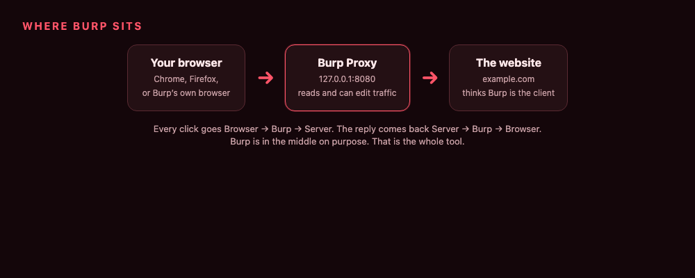
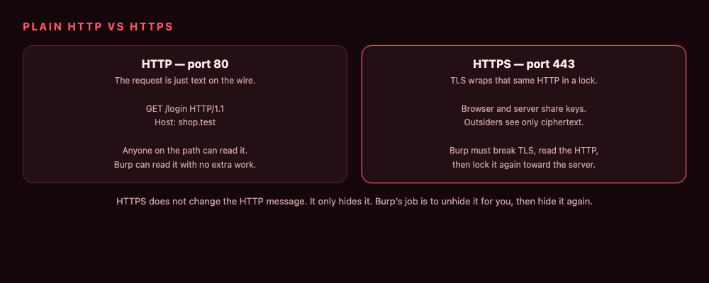
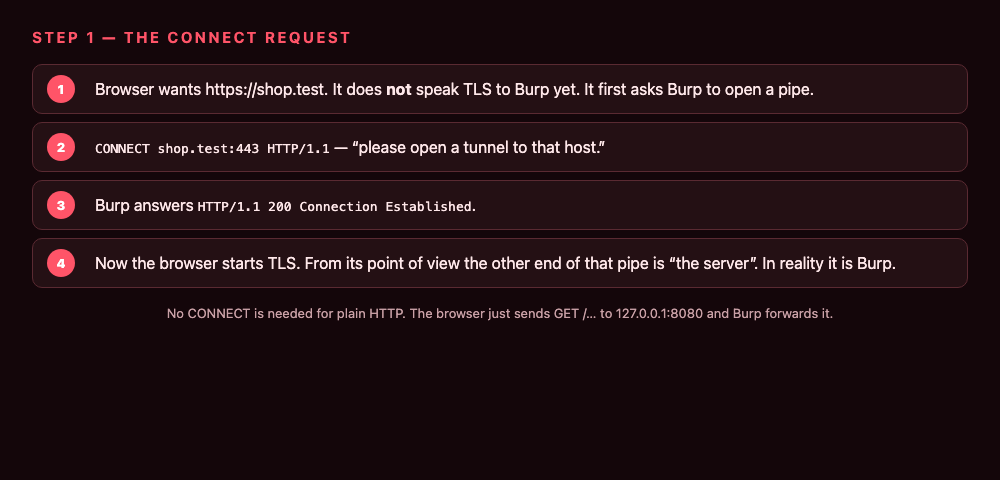
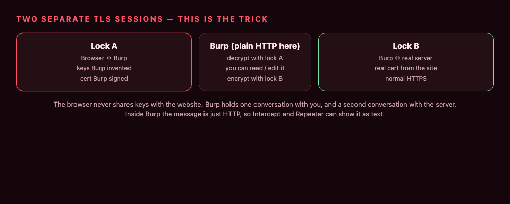
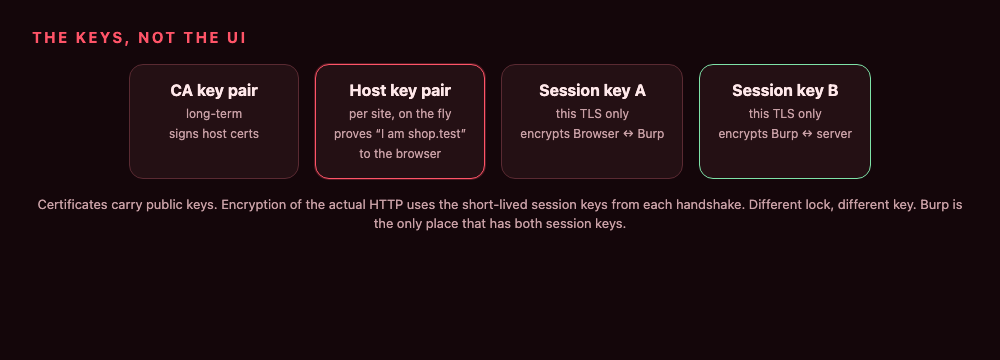
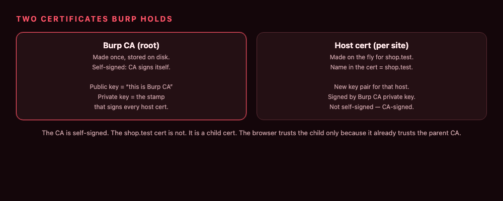
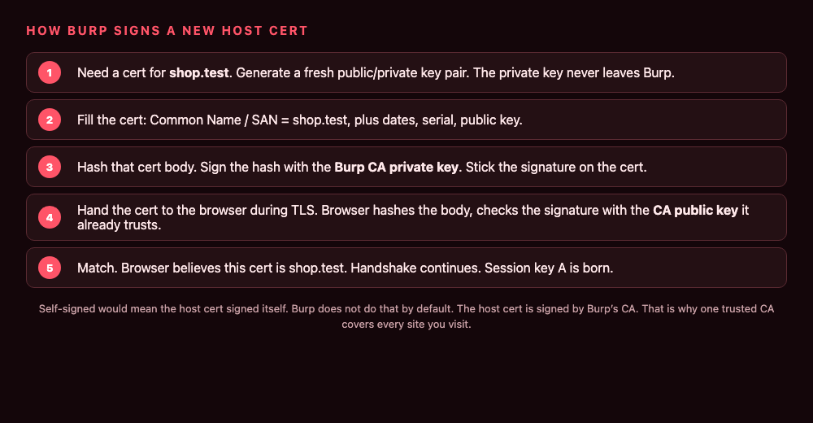
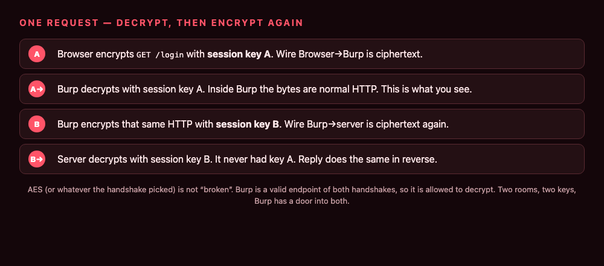
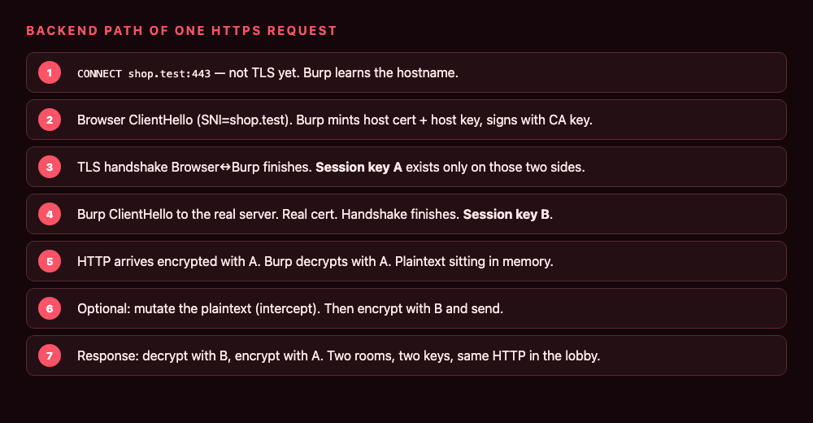
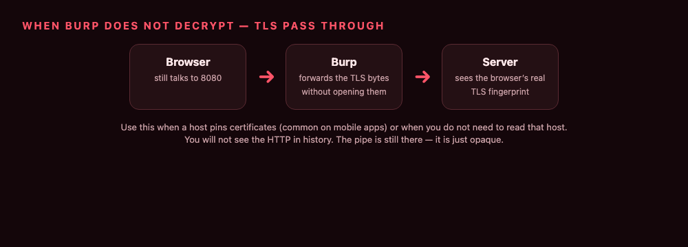

How Burp Decrypts HTTPS: CA, Fake Host Certs, and Two Session Keys
How Burp Proxy works on the wire: a self-signed CA, per-host certs signed with that CA key, two TLS sessions, and decrypt/encrypt with two different session keys. No install walkthrough.
Burp does not crack AES. It does not steal shop.test’s private key. It becomes a TLS server toward your browser and a TLS client toward the real site, then copies HTTP from one room to the other.
That is the whole backend. The rest of this post is just the keys.
The job
HTTPS is HTTP inside TLS. TLS does two things:
- Encrypt the bytes so a random observer cannot read them.
- Prove the other end is really
shop.test, using a certificate.
A normal browser talks TLS straight to the site. One handshake. One session key. Burp cannot read that.
So Burp splits it.

Browser ↔ Burp is TLS. Burp ↔ server is a different TLS. In the process, Burp is a valid endpoint of both, so it is allowed to decrypt both. Inside the process the HTTP is just text.

CONNECT is how Burp learns the hostname
HTTPS via a proxy starts in the clear, once:
CONNECT shop.test:443 HTTP/1.1
Burp replies 200 Connection Established. Now the browser starts TLS on that socket. From the browser’s view the peer is the server. The peer is Burp.
The ClientHello carries SNI = shop.test. That string is what Burp prints on the fake certificate. No SNI, and Burp does not know which name to put in the cert (invisible proxying hits this).

Plain HTTP never does this. There is no lock. Burp already sees GET /….
Two TLS sessions, two session keys
Call them Lock A and Lock B.

| Lock A | Lock B | |
|---|---|---|
| Ends | Browser and Burp | Burp and real server |
| Cert the “server” shows | Burp’s fake shop.test cert |
The real shop.test cert |
| Session key | A — lives in browser + Burp | B — lives in Burp + server |
| Who can decrypt that hop | only those two | only those two |
The browser never has key B. The server never has key A. Burp has both. That is why history can show GET /login as text.

Session keys are short-lived. They come out of the handshake (TLS 1.3 uses a slightly different dance than 1.2, same idea). They are what actually encrypt the HTTP. The certificates are how each side agrees “I am talking to the right peer” before those keys exist.
Burp’s CA is self-signed. Host certs are not.
A certificate is: a public key + a name + extra fields, plus a signature.
Self-signed means the cert’s signature was made with the matching private key. “I vouch for myself.”
Burp makes a CA certificate the first time it runs. That CA is self-signed. Public key and private key of the CA are a pair on disk. The private key is the stamp.
Then, for every hostname, Burp does not self-sign again. It mints a child cert:
- new key pair for this host
- name / SAN =
shop.test - signature made with the CA private key

If the host cert were self-signed, the browser would warn on every site, every time. Because it is signed by a CA the browser already trusts (Burp’s CA sitting in the trust store), the child is accepted for any name Burp puts on it.
That is also why one CA covers google, github, your target, everything. Same stamp, different child.
Default in Burp: Generate CA-signed per-host certificates. The other options (one self-signed blob for every host, or one fixed hostname) are workarounds, not the normal path.
How the new cert is created and signed
On the first CONNECT/SNI for shop.test (Burp caches after that):
- Generate an RSA (or similar) key pair. Private key stays in Burp. This key is what Burp will use as the TLS server toward the browser.
- Build a cert:
CN/SAN= shop.test, validity window, serial, the public key from step 1, issuer = Burp CA. - Hash the cert body.
- Sign that hash with the CA private key. Attach the signature.
- During ServerHello / certificate message, send this cert to the browser.

The browser:
- hashes the cert body the same way
- checks the signature with the CA public key (from the trusted CA)
- checks the name is
shop.test - checks dates
If that passes, it agrees to derive session key A with whoever holds the host private key. That is Burp. Handshake done. Lock A is live.
Burp never needed the real site’s private key. It invented a new one and got the browser to accept it because the CA stamp matched.
On Lock B, Burp is a client. It does a normal handshake with the real server, validates the real cert the usual way, and gets session key B. Two handshakes. Two keys.
Encrypt and decrypt of one request
Once both locks are up, one GET looks like this:

Request
- Browser takes
GET /login HTTP/1.1 …and encrypts with session key A (AES-GCM or whatever the handshake picked). - Burp receives ciphertext, decrypts with A. Now it is HTTP in memory. Intercept / history / Repeater all read this buffer.
- Burp encrypts that buffer (or an edited copy) with session key B.
- Real server decrypts with B.
Response is the mirror: decrypt B, maybe edit, encrypt A.
Nothing “unwraps TLS in general.” Each hop is a normal TLS record. Burp is just the only process that is a peer on both hops.

What you see in Burp is after decrypt
The Intercept tab is not a third encryption layer. It is a pause on that plaintext buffer between A and B. Forward = encrypt with B. Drop = never send Lock B.
If Intercept is off, the same decrypt-A / encrypt-B still happens. You just do not wait.
When decrypt does not happen
TLS pass through: Burp forwards the TLS records and never completes Lock A as a decrypting server. No session key A for that host. History cannot show HTTP. Used when the client pins the real cert (it will reject Burp’s child cert) or when you want the server to see the browser’s real TLS fingerprint.

Pinning is the client saying “I do not care that a CA signed this. I want this public key / this CA.” Burp’s child cert fails that check. Crypto is working. The extra check is what blocks the MITM.
Short version
- TLS encryption uses session keys, not the CA key.
- Burp runs two TLS sessions so it holds two session keys.
- The CA is self-signed, once.
- Each site gets a new host cert + host key, signed with the CA private key, name copied from SNI.
- Browser trusts the host cert because it trusts the CA. Handshake with Burp succeeds. Decrypt A, encrypt B.
That is the backend. The UI is just a window onto the plaintext between those two locks.